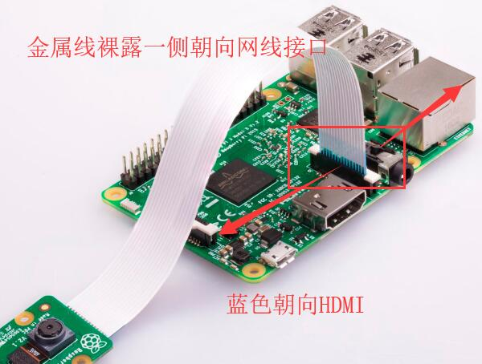

Raspberry摄像机操作
- categories
- >
- Microcomputer
- >
- Pi
写在前面
Raspberry各种调用摄像机方法。
使用Raspberry官方CSI摄像头
终端调用摄像机
通过raspistill拍摄照片
通过raspivid拍摄视频
参考
连接摄像模块

设置 -> enable camera，开启摄像机
raspistill 使用
raspistill -o ./Desktop/img.jpg拍摄一张相片，存放在 Desktop 下(路径)，名称为 img.jpg
垂直反转命令-vf, 水平翻转命令-hf，可同时使用
raspivid 使用
raspivid -o video.h264拍摄一段视频，保存为 video.h264
视频长度控制：-t毫秒单位。例：raspivid -o video.h264 -t 10000
个人测试：树莓派开启后再插入摄像头模块将无法检测到，重启即可
OpenCV调用CSI摄像头
OpenCV 使用 VideoCapture(0)调用 CSI 摄像头，无报错，无数据。
这是因为树莓派中的 camera module 是放在/boot/目录中以固件形式加载的，不是一个标准的 V4L2 的摄像头驱动，所以加载起来之后会找不到/dev/video0 的设备节点。我们在/etc/modules 里面添加一行 bcm2835-v4l2（小写的 L）就能解决问题。
修改文件/etc/modules
在文件中添加一行bcm2835-v4l2
注意：是小写的 L，不是 1，如果是 1 可能导致无法正常启动
Python库Picamera
参考：Picamera
from time import sleep
from picamera import PiCamera
camera = PiCamera()
camera.resolution = (1024, 768)
camera.start_preview()
# Camera warm-up time
sleep(2)
camera.capture('foo.jpg')使用通过USB连接的普通摄像头
使用OpenCV。通用编程方法。
comment:
- Valine
- LiveRe
- ChangYan